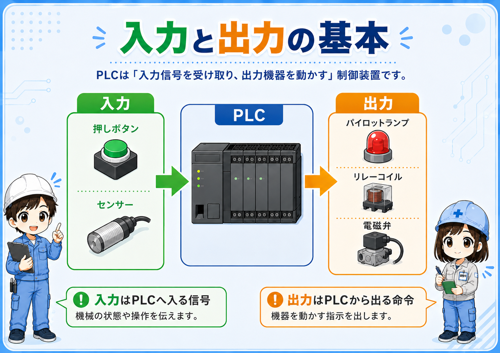
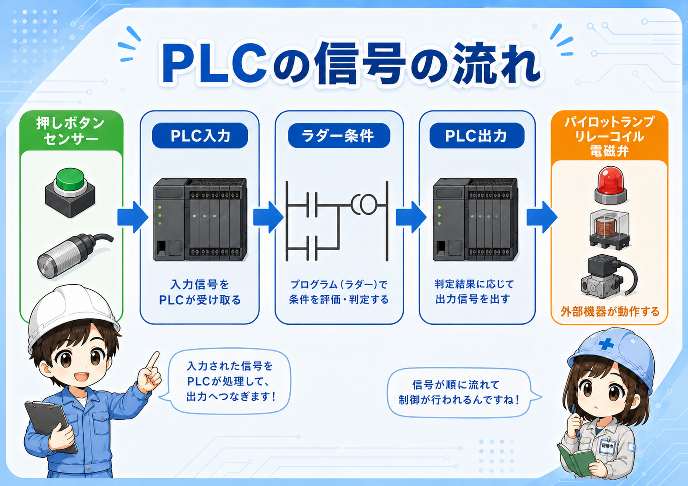
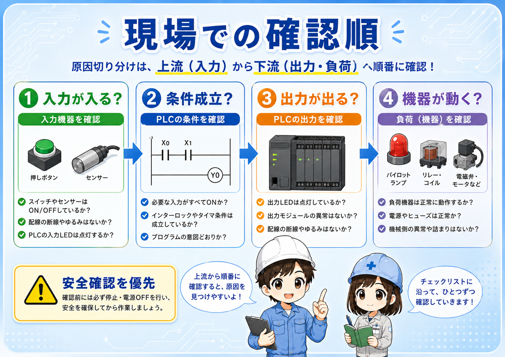

1. 先に結論
PLCの入力と出力は、信号の向きで考えると分かりやすいです。 センサーや押しボタンからPLCへ入ってくる信号が入力、PLCからランプや電磁弁へ出ていく信号が出力です。
初心者のうちは、機器の名前だけで判断しようとすると混乱しやすくなります。 同じリレーでも、コイルは出力側として扱われることがあり、補助接点は入力信号として使われることがあります。
覚え方は「入力は知らせる、出力は動かす」
入力は、現場の状態や操作をPLCへ知らせます。 出力は、PLCの判断結果を使って、表示灯・リレー・電磁弁・ブザーなどを動かします。

先輩入力と出力は、まず信号の向きで見るといいよ。PLCへ入るのか、PLCから出るのかを考えるんだ。

新人センサーの信号はPLCへ入るから入力、ランプを点ける命令はPLCから出るから出力、という見方ですね。
2. 入力と出力とは
入力とは、現場側の機器からPLCへ入ってくる信号です。 たとえば、押しボタンを押した、センサーが反応した、リミットスイッチが入った、という情報がPLCへ届くイメージです。
出力とは、PLCから現場側の機器へ出ていく命令です。 たとえば、表示灯を点ける、ブザーを鳴らす、リレーをONする、電磁弁を動かす、といった動作につながります。

最初は細かい番号より「向き」を見る
X0やY0のような番号を覚える前に、まずは信号の向きを整理します。 何がPLCへ入ってきて、何がPLCから出ていくのかを追うと、I/O表やラダーも読みやすくなります。
3. 現場でよく見る入力機器と出力機器
入力と出力は、実際の機器に結びつけると覚えやすくなります。 ただし、機器名だけで完全に決めつけるのではなく、その機器が回路の中でどんな役割をしているかを見ることが大切です。
| 区分 | よくある機器 | 役割のイメージ |
|---|---|---|
| 入力 | 押しボタン、センサー、リミットスイッチ、セレクタスイッチ接点、補助接点 | 状態、検出、位置、操作などをPLCへ知らせます。 |
| 出力 | 表示灯、ブザー、電磁弁コイル、リレーコイル、電磁接触器コイル | PLCからの命令を受けて、表示・音・動作・中継などを行います。 |
| 使い方で変わる | リレー、電磁接触器、補助接点、フィードバック接点 | コイルは出力側、接点は入力側の信号として使われることがあります。 |
リレーは特に混乱しやすい
リレー本体を1つのものとして見ると分かりにくいですが、コイルと接点に分けると整理しやすくなります。 PLCがリレーコイルをONするなら出力側、リレー接点の状態をPLCへ戻すなら入力側として考えます。
4. PLCではXとYで見ることが多い
三菱電機系のPLCでは、現場でXを入力、Yを出力として見る場面が多くあります。 たとえば、X0が押しボタンやセンサーの入力、Y0がランプやリレーの出力として扱われるようなイメージです。
ただし、実際の番号や割付は、PLCの機種、I/Oユニット、配線、図面、現場の設計ルールによって変わります。 そのため、記事内では一般的な考え方として扱い、実機では必ず図面・I/O表・PLCプログラムを確認します。

X/Yだけで実配線を決めつけない
XやYは基本を理解する手がかりになりますが、実際の配線や端子番号は設備ごとに確認が必要です。 作業時は、図面、I/O表、メーカー資料、現場ルールを優先してください。
5. 入力か出力か迷った時の見分け方
入力か出力か迷った時は、機器の名前よりもその信号がどちらへ向かっているかを見ます。 PLCへ状態を知らせているなら入力、PLCから命令を受けて動くなら出力です。
PLCへ知らせる？
押しボタン、センサー、接点などがPLCへ状態を伝えるなら入力です。
PLCから動かす？
ランプ、ブザー、リレーコイル、電磁弁などをPLCがONするなら出力です。
名前だけで判断しない
同じリレーでも、コイルと接点では信号の向きが変わることがあります。
図面とI/O表を見る
端子番号、線番、I/O表、ラダー上のデバイスを合わせて確認します。
現場での覚え方
「知らせる側」は入力、「動かされる側」は出力。 この見方を持っておくと、配線図・I/O表・ラダーをつなげて考えやすくなります。
6. 初心者が混乱しやすいポイント
入力と出力で混乱しやすいのは、1つの機器に複数の役割がある場合です。 リレーや電磁接触器は、コイルとして見る場合と、接点として見る場合で扱いが変わります。
- リレーコイル：PLC出力でONするなら出力側として考えます。
- リレー接点：PLCへ状態を戻すなら入力側として考えます。
- センサー表示灯：センサー本体のランプが光っていても、PLC入力がONしているとは限りません。
- PLC出力表示：ラダー上で出力がONでも、実際の機器側が動くとは限りません。
新人センサーのランプが点いていたら、PLC入力もONしていると思っていました。
先輩そこは注意だね。センサー本体が反応していても、配線や入力ユニット側で信号が入っていないことがあるよ。
7. トラブル時は入力→条件→出力→負荷で見る
設備が動かない時は、いきなり部品不良と決めつけず、信号の流れを順番に確認します。 まず入力がPLCへ入っているか、次にラダー条件が成立しているか、そしてPLC出力が出ているか、最後に負荷側が動いているかを見ます。

入力側を見る
押しボタン、センサー、リミットスイッチの信号がPLCへ入っているか確認します。
条件を見る
ラダー上でインターロック、モード、異常、リセット条件などが邪魔していないか見ます。
出力側を見る
PLC出力がONしているか、出力ユニットや出力リレー側に問題がないか確認します。
負荷側を見る
ランプ、リレー、電磁弁、ブザー、機械側電源、配線、機器本体を確認します。
実機確認は安全を優先する
PLC出力は、電磁弁・リレー・モーター回路などの動作につながることがあります。 測定や強制ON/OFFを行う場合は、設備状態、周囲確認、社内手順、メーカー資料を必ず確認してください。
8. まとめ
入力と出力の違いは、PLCを学ぶ最初の大事な考え方です。 入力はPLCへ入る情報、出力はPLCから現場機器へ出る命令として整理すると、配線図やラダーを追いやすくなります。
実務では、センサーが反応しているか、PLC入力がONしているか、ラダー条件が成立しているか、PLC出力がONしているか、負荷側が動くかを分けて見ることが大切です。
- 入力は、現場の状態や操作をPLCへ知らせる信号
- 出力は、PLCから現場機器へ出る命令
- X/Yは基本理解の手がかりになるが、実機では図面とI/O表を確認する
- トラブル時は、入力→条件→出力→負荷の順で切り分ける